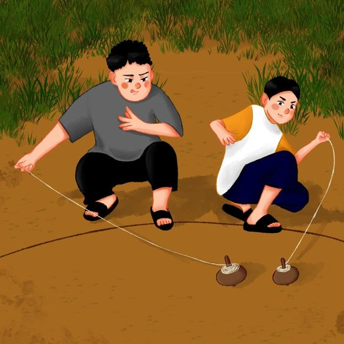

Gasing (Tulisan Jawi: ݢاسيڠ) merupakan sejenis permainan yang boleh berputar pada paksinya, sambil mengimbang pada satu titik.
Gasing merupakan permainan tradisional orang-orang Melayu sejak dahulu lagi, biasanya dimainkan selepas musim menuai.
Permainan gasing dipertandingkan antara kampung. Pemenang dikira berdasarkan tempoh masa gasing mampu berputar.
Lebih banyak informasi , rujuk bawah sini: